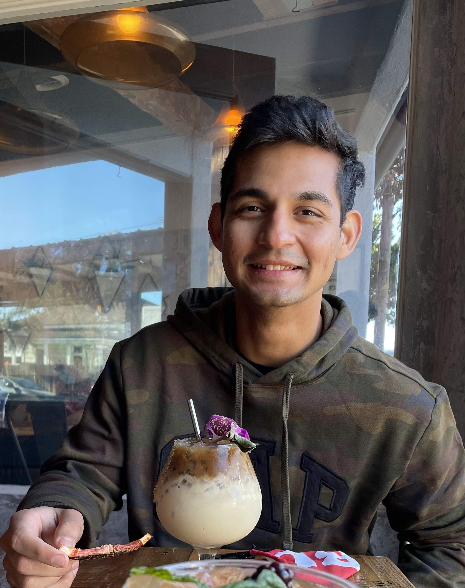
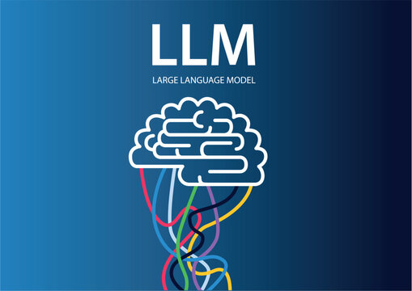
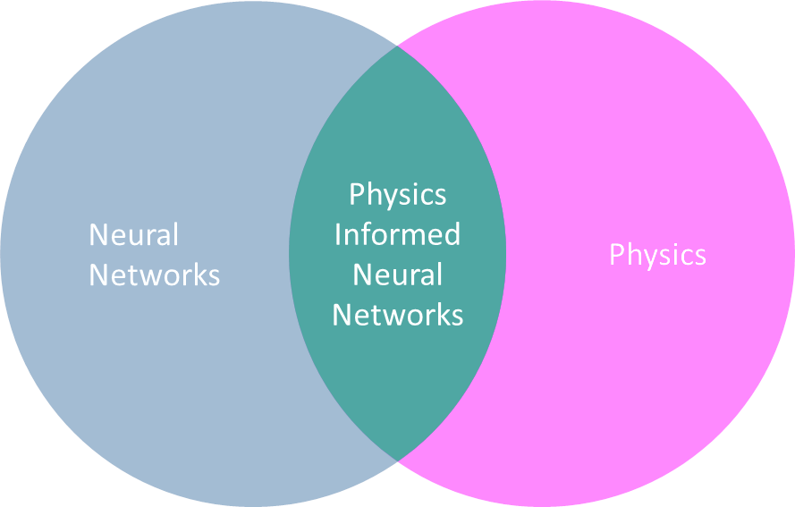
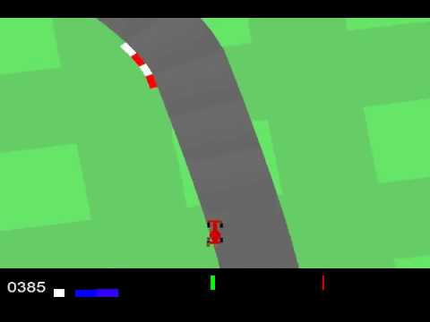
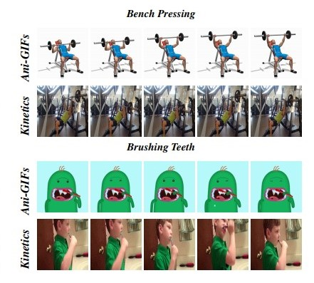
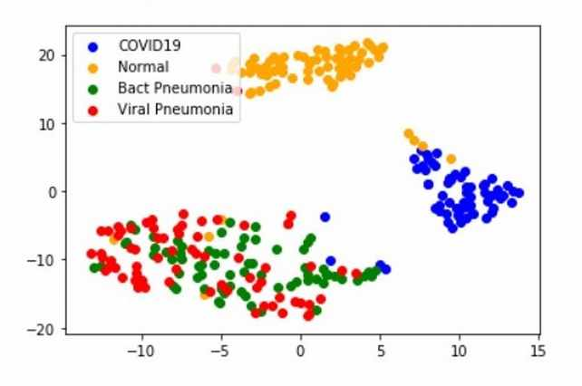
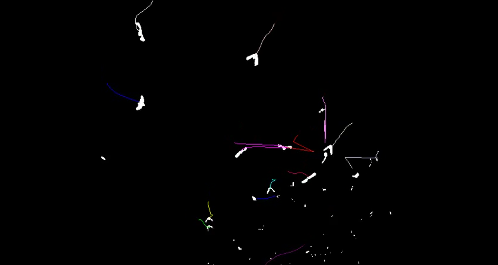
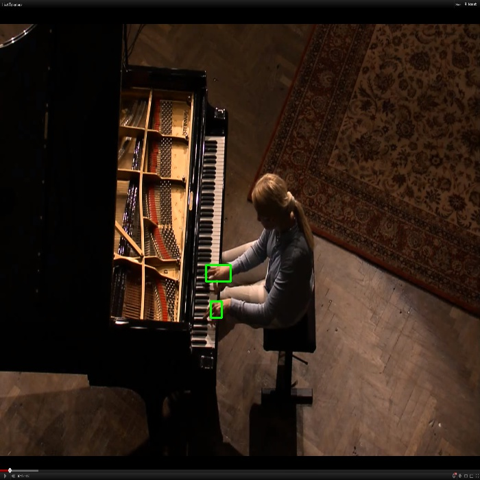
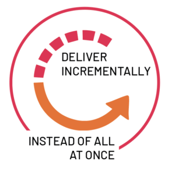

|
Resume / Email / Github / LinkedIn Excitement is the most practical synonym for happiness, and it is precisely what you should strive to choose. It is the cure all. - Tim Ferris Currently working as a Machine Learning engineer at Quantiphi. I build machine learning solutions at scale for clients using Google Cloud Platform (GCP). A significant part of my work centers around MLOps - not just developing ML solutions, but also ensuring their continuous success in production. I have been engaged in several Generative AI gigs lately and it is a subject that I am deeply interested in and actively learning about. I have worked for clients across various industries such as manufacturing, education, healthcare, finance and pubsec. I have an inclination towards academia and research which has resulted in lots of learnings and a couple of publications. Prior to this, I did my Masters in Computer Science from Boston University and my Engineering from University of Mumbai. When I am not working, you will find me trying new things - Reading, Improv, Jiu Jitsu, Salsa, Skydiving, Snorkelling, Tattoos, Weight training. I have a deep passion for animals. Having grown up with dogs my entire life, a dream of mine is to make sure every stray dog on the streets of Mumbai, India is accounted for. I also adopted an orphan baby elephant named Lodo in Kenya! I would encourage everyone to give back to society in whatever way that resonates with them. This space isn't just a work portfolio for me; it's a reflection of my personal journey, passions, and the profound impact of making a difference in the world. |
 |
Recent Readings
-
Patterns for building LLM - based systems and Products
Patterns for integrating large language models (LLMs) with existing systems. Talks about how to evaluate LLMs, the Retrieval-Augmented Generation (RAG) framework - which is the most practical approach for enterprise search, caching, guardrailing and setting up a data flyweel. All in all, a good intro to LLM Ops. -
Emerging Architectures for LLM Applications
Reference architecture for the emerging LLM app stack. Deep dive on In-context learning (using LLMs off the shelf). The stages in the workflow and the tools you can use. Gives you a good comprehensive learning of what tools you can use to build an LLM application. -
Practitioners guide to MLOps
A google whitepaper that takes a deeper dive into the themes of scaling and automating and operationalizing ML systems. It introduces MLOps processes and capabilities and why they’re important for successful adoption of ML-based systems. It also takes deep dive on the concrete details of tasks like running a continuous training pipeline, deploying a model, and monitoring and predictive performance of an ML model. -
The Little Liar: A Novel - Mitch Albom
A story of intertwined lives of three holocaust survivors from Salonika, Greece. The protagonist, a 11 year old boy called Nico who has never lied in his life is deceived into convincing his fellow jews to board trains to the camps. Only after it is too late does Nico discover that he helped send the people he loved—and all the others—to their doom at Auschwitz. Nico never tells the truth again. -
The Palace of Illusions - Chitra Banerjee Divakaruni
Interesting retelling of the Indian epic Mahabharata from Draupadi's point of view. -
Siddhartha - Hermann Hesse
The story of a man and his search for meaning. The book talks about the true meaning of spirituality and how it is a very personal journey. Filled with little trinkets of wisdom that we overlook in our quest for success.
TECH
BOOKS
Projects |
|
 |
Github
A simple Retrieval-Augmented Generation(RAG) framework using LangChain. |
|
 |
Project Summary / Paper
Physics-Informed Neural Networks (PINNs) are machine learning models that
integrate data-based learning with partial differential equations (PDEs). It lies in the
intersection of data-driven machine learning and equation-bounded laws of physics.
Through our experiments we demonstrate that PINNs can be used to discover underlying Physics
of a system and we showcased that PINNs can be a valuable complimentary modeling approach to classic
computational fluid dynamics (CFD) solvers.
|
|
|
Github Recommendation systems for suggesting movies based on Collaborative filtering and Content based Recommendations. For content based, I use keywords from the plot, genre and crew information to recommend movies. For collaborative method, I use a memory based system (item-item similarity) to provide recommendations. Stack: Python, Flask, Scikit-learn, Numpy, Pandas. |

|
Github Reinforcement Learning agent trained using DeepQ learning and Double DeepQ learning algortihms on OpenAI Gym's Car Racing environment. Stack: Python, Pytorch, OpenAI Gym, Numpy, Pyglet, Matplotlib. |
|
 |
Github Self driving car based on modular pipeline on OpenAI Gym's Car Racing environment. Stack: Python, Scipy, OpenAI Gym, Numpy, Pyglet, Matplotlib. |
|
|
Github The goal of our project is to build a distributed password cracking system. Through a web interface, a user will enter the password they wish to crack. The interface will calculate the md5 hash of this string and pass it to the management service. Once the request is submitted, a distributed system of worker nodes will crack the hash and return the correct password. Stack: Python, Flask, GENI Network Simulator, Socket Programming. |
|
 |
Project Summary / Paper We collect and present the first synthetic video dataset of Animated GIFs for domain generalization, Ani-Gifs, that is used to study domain gap of videos vs. GIFs, and animated vs. real GIFs, for the task of action recognition. We provide a training and testing setting for Ani-GIFs, and extend two domain generalization baseline approaches, based on data augmentation and explainability, to the spatiotemporal domain to catalyze research in this direction. Stack: Python, PyTorch, Tensorflow, Numpy, OpenCV, PIL. |
|
 |
Github / Project Report / Project Summary The aim of this project was to compare state-of-the-art deep learning architectures for image classification to determine the model architecture best suited for X-Ray images. We hoped to determine the model that successfully classifies a person to be a COVID19 positive patient or a healthy person. Additionally, we were also able to determine if a patient was suffering from bacterial or viral pneumonia instead. Stack: Python, Tensorflow, Keras, Numpy, Matplotlib. |
|
 |
Project Page / Github / Demo Designing a tracking system to track multiple objects in video sequences. This is based on traditional computer vision techniques of predicting positions of the object using a bayesian filter such as Alpha-Beta filter or Kalman filter followed by data association techniques. Stack: Python, Scipy, OpenCV, Numpy. |
|

|
Github / Project Page / Demo (Bats) / Demo (Pedestrians) / Demo (Piano Hands) Given a binary image (e.g. hands or tumor images), find connected components and label each object using classical computer vision. I follow this up by detecting boundaries and skeletal structure of the object. I calculate classical computer vision metrics such as object area, orientation, circularity, and compactness for each object. I follow this up by implementing classic segmentation techniques and identify moving objects in a video. I do so in different settings which led to solving the challenges of occlusion, mulitple objects in the frames, inconsistent lighting conditions. Stack: Python, OpenCV, Numpy. |
|
 |
Github / Project Summary Developed a Java Software that lets professors organize and compute grades of student enrolled in their courses. Gives the users the flexiblity of setting rubrics, adding and removing assignments and computing statistics at the click of a button. A system that lets the user create a template that can be resused without having to define rubrics and component for every course. Stack: Java, SQL, Swing. |
|
|